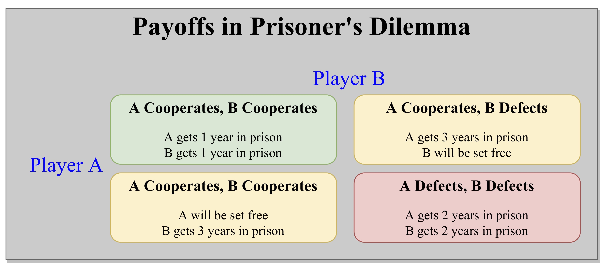

Cooperation is the process of groups of organisms working or acting together for common, mutual, or some underlying benefit, as opposed to working in competition for selfish benefit. One example is the ocellaris clownfish, which dwells among the tentacles of Ritteri sea anemones. The anemones provide the clownfish with protection from their predators (which cannot tolerate the stings of the sea anemone's tentacles), while the fish defend the anemones against butterflyfish (which eat anemones). In other words, cooperation is when individual components that appear to be selfish and independent, work together to create a highly complex, greater-than-the-sum-of-its-parts system. Examples of such behaviour in our society includes those in market trade, military wars, families, workplaces, schools and more generally any institution or organization of which individuals are part.
Individual action on behalf of a larger system may be forced, freely chosen, or even unintentional, and consequently individuals and groups might act in concert even though they have almost nothing in common as regards interests or goals. But as humans how exactly do we determine when to be selfish and when to cooperate ? Charles Darwin's theory of how evolution works (by means of Natural Selection) is explicitly competitive. The undoubted success of Darwin's theory strongly suggests an inherently antagonistic relationship between unrelated individuals. Yet cooperation is prevalent, seems beneficial, and even seems to be essential to human society. Explaining this seeming contradiction, and accommodating cooperation, and even altruism, within Darwinian theory is a central issue in the theory of cooperation.
It turns out we can better understand this complex behaviour by studying the game of Prisoner's Dilemma. The prisoner's dilemma is a standard example of a game analyzed in game theory that shows why two completely rational individuals might not cooperate, even if it appears that it is in their best interests to do so. It was originally framed by Merrill Flood and Melvin Dresher in 1950. Albert W. Tucker formalized the game with prison sentence rewards and named it prisoner's dilemma.
The game of Prisoner's Dilemma goes like this: Two members of a criminal gang are arrested and imprisoned. Each prisoner is in solitary confinement with no means of communicating with the other. The prosecutors lack sufficient evidence to convict the pair on the principal charge, but they have enough to convict both on a lesser charge. Simultaneously, the prosecutors offer each prisoner a bargain. Each prisoner is given the opportunity either to betray the other by testifying that the other committed the crime, or to cooperate with the other by remaining silent. The offer is,

The prisoner setting may seem contrived, but there are in fact many examples in human interaction as well as interactions in nature that have the same payoff matrix. Why shouldn't a shark eat the little fish that has just cleaned it of parasites: in any given exchange who would know? Fig wasps collectively limit the eggs they lay in fig trees (otherwise, the trees would suffer). But why shouldn't any one fig wasp cheat and leave a few more eggs than her rivals? At the level of human society, why shouldn't each of the villagers that share a common but finite resource try to exploit it more than the others? At the core of these and myriad other examples is a conflict formally equivalent to the Prisoner's Dilemma. Yet sharks, fig wasps, and villagers all cooperate. It has been a vexatious problem in evolutionary studies to explain how such cooperation should evolve, let alone persist, in a world of self-maximizing egoists.
So what do you do? The best that you and your associate can do together is to not squeal: that is, to cooperate in a mutual bond of silence, and do your year. But wait, if your associate cooperates, can you do better defecting to get that six month reduction? It's tempting, but then he's also tempted. And if you both squeal, oh, no, it's four and half years each. So perhaps you should cooperate – but wait, that's being a sucker yourself, as your associate will undoubtedly defect, and you won't even get the six months off. So what is the best strategy to minimize your sentence ?
To cooperate, or not cooperate? This simple question and the implicit question of whether to trust, or not, expressed in an extremely simple game, is a crucial issue across a broad range of life. Many natural processes have been abstracted into models in which living beings are engaged in endless games of prisoner's dilemma. This wide applicability of the Prisoner's Dilemma gives the game its substantial importance and is therefore of interest to the social sciences such as economics, politics, and sociology, as well as to the biological sciences such as ethology and evolutionary biology. Thus the prisoner's dilemma game can be used as a model for many real world situations involving cooperative behavior.
Now that you are familiar with the rules of the game, play the game yourself against an opponent (computer) and figure out what is the best strategy. You can set one of the following strategies for your opponent,
Try to play against all strategies and determine what is the best strategy for the game of Prisoner's Dilemma.
Because betraying a partner offers a greater reward than cooperating with them, all purely rational self-interested prisoners will betray the other, meaning the only possible outcome for two purely rational prisoners is for them to betray each other. The reasoning involves an argument by dilemma: B will either cooperate or defect. If B cooperates, A should defect, because going free is better than serving 1 year. If B defects, A should also defect, because serving 2 years is better than serving 3. So either way, A should defect. Parallel reasoning will show that B should defect.
You may have reached the same conclusion after playing against different strategies of Prisoner's Dilemma. When two players play Prisoner's Dilemma, there are four possible outcomes. We can translate prison sentence payoff into following scores,
Game theory enthusiasts may also note that mutual defection is the only strong Nash equilibrium in the game. The dilemma, then, is that mutual cooperation yields a better outcome than mutual defection but is not the rational outcome because the choice to cooperate, from a self-interested perspective, is irrational. So pursuing individual reward logically leads both of the prisoners to betray when they would get a better individual reward if they both kept silent. Interestingly in reality, humans display a systemic bias towards cooperative behavior in this and similar games despite what is predicted by simple models of "rational" self-interested action.
If two players play prisoner's dilemma more than once in succession and they remember previous actions of their opponent and change their strategy accordingly, the game is called iterated prisoner's dilemma. In this version, the classic game is played repeatedly between the same prisoners, who continuously have the opportunity to penalize the other for previous decisions. This is fundamental to some theories of human cooperation and trust on the assumption that the game can model transactions between two people requiring trust, cooperative behaviour in populations may be modeled by a multi-player, iterated, version of the game.
If the game is played exactly 'N' times and both players know this, then it is optimal to defect in all rounds. The only possible Nash equilibrium is to always defect. But an interesting and counter-intuitive behaviour emerges when 'N' becomes unknown. Unlike the standard prisoner's dilemma, in the iterated prisoner's dilemma the defection strategy is counter-intuitive and fails badly to predict the behavior of human players. Amongst results shown by Robert Aumann in a 1959 paper, rational players repeatedly interacting for indefinitely long games can sustain the cooperative outcome.
Interest in the iterated prisoner's dilemma was kindled by Robert Axelrod in his book The Evolution of Cooperation (1984). In it he reports on a tournament he organized of the N step prisoner's dilemma (with N fixed) in which participants have to choose their mutual strategy again and again, and have memory of their previous encounters. Axelrod invited academic colleagues all over the world to devise computer strategies to compete in an IPD tournament.
To better model the effects of reproductive success Axelrod also did an ecological tournament, where the prevalence of each type of strategy in each round was determined by that strategy's success in the previous round. The competition in each round becomes stronger as weaker performers are reduced and eliminated. The success of any strategy depends on the nature of the particular strategies it encounters, which depends on the composition of the overall population. The results were amazing as seen in the following chart.
Axelrod discovered that when these encounters were repeated over a long period of time with many players, each with different strategies, a handful of strategies – all "nice" – came to dominate the field. In a sea of non-nice strategies the "nice" strategies – provided they were also provokable – did well enough with each other to offset the occasional exploitation. Greedy strategies tended to do very poorly in the long run while more altruistic strategies did better, as judged purely by self-interest. He used this to show a possible mechanism for the evolution of altruistic behaviour from mechanisms that are initially purely selfish, by natural selection.
Being "nice" can be beneficial, but it can also lead to being suckered. To obtain the benefit – or avoid exploitation – it is necessary to be provocable to both retaliation and forgiveness. When the other player defects, a nice strategy must immediately be provoked into retaliatory defection. The same goes for forgiveness: return to cooperation as soon as the other player does. Overdoing the punishment risks escalation, and can lead to an unending echo of alternating defections that depresses the scores of both players. Accordingly the winning deterministic strategy in Axelrod's tournament was tit for tat, which Anatol Rapoport developed and entered into the tournament. It was the simplest of any program entered, containing only four lines of BASIC, and won the contest. The strategy is simply to cooperate on the first iteration of the game; after that, the player does what his or her opponent did on the previous move.
Axelrod's tournament showed that success in an evolutionary "game" correlated with the following characteristics:
The prisoner's dilemma game can be used as a model for many real world situations involving cooperative behavior. In casual usage, the label "prisoner's dilemma" may be applied to situations not strictly matching the formal criteria of the classic or iterative games: for instance, those in which two entities could gain important benefits from cooperating or suffer from the failure to do so, but find it difficult or expensive—not necessarily impossible—to coordinate their activities. The prisoner's dilemma is therefore of interest to the social sciences such as economics, politics, and sociology, as well as to the biological sciences such as ethology and evolutionary biology.
In environmental studies, the Prisoner's Dilemma situation is evident in crises such as global climate-change. It is argued all countries will benefit from a stable climate, but any single country is often hesitant to curb CO. The immediate benefit to any one country from maintaining current behavior is wrongly perceived to be greater than the purported eventual benefit to that country if all countries' behavior was changed, therefore explaining the impasse concerning climate-change in 2007.
Cooperative behavior of many animals can be understood as an example of the prisoner's dilemma. We have already seen examples of clownfish-sea anemones, shark-little fishes etc. Often animals also engage in long term partnerships, which can be more specifically modeled as iterated prisoner's dilemma. For example, guppies inspect predators cooperatively in groups, and they are thought to punish non-cooperative inspectors.
In addiction research, behavioral economics, George Ainslie points out that addiction can be cast as an intertemporal PD problem between the present and future selves of the addict. In this case, defecting means relapsing, and it is easy to see that not defecting both today and in the future is by far the best outcome. The case where one abstains today but relapses in the future is the worst outcome. Relapsing today and tomorrow is a slightly better outcome, because while the addict is still addicted, they haven't put the effort in to trying to stop. The final case, where one engages in the addictive behavior today while abstaining "tomorrow" will be familiar to anyone who has struggled with an addiction, ultimately leading to an endless string of defections.
Advertising is sometimes cited as a real-example of the prisoner’s dilemma. When cigarette advertising was legal in the United States, competing cigarette manufacturers had to decide how much money to spend on advertising. The effectiveness of Firm A’s advertising was partially determined by the advertising conducted by Firm B. If both Firm A and Firm B chose to advertise during a given period, then the advertising cancels out, receipts remain constant, and expenses increase due to the cost of advertising. Both firms would benefit from a reduction in advertising. However, should Firm B choose not to advertise, Firm A could benefit greatly by advertising. This eventually led to cooperative behaviour with cigarette manufacturers endorsing the making of laws banning cigarette advertising, understanding that this would reduce costs and increase profits across the industry.
Doping in sport has been cited as an example of a prisoner's dilemma. Two competing athletes have the option to use an illegal drug to boost their performance. If neither athlete takes the drug, then neither gains an advantage. If only one does, then that athlete gains a significant advantage over their competitor. If both athletes take the drug, however, the benefits cancel out and only the dangers remain, putting them both in a worse position than if neither had used doping
A classic example is an arms race like the Cold War and similar conflicts. During the Cold War the opposing alliances of NATO and the Warsaw Pact both had the choice to arm or disarm. From each side's point of view, disarming whilst their opponent continued to arm would have led to military inferiority and possible annihilation. Although the 'best' overall outcome is for both sides to disarm, the rational course for both sides is to arm, and this is indeed what happened. Both sides poured enormous resources into military research and armament in a war of attrition for the next thirty years until the Soviet Union could not withstand the economic cost.
For many years, the prisoner's dilemma game pointed out that even if all members of a group would benefit if all cooperate, individual self-interest may not favor cooperation. The prisoner's dilemma codifies this problem and has been the subject of much research, both theoretical and experimental. Results from experimental economics show that humans often act more cooperatively than strict self-interest would seem to dictate. One reason may be that if the prisoner's dilemma situation is repeated (the iterated prisoner's dilemma), it allows non-cooperation to be punished more, and cooperation to be rewarded more, than the single-shot version of the problem would suggest. It has been suggested that this is one reason for the evolution of complex emotions in higher life forms.
Game theory could not find a strategy for the game of Prisoner's Dilemma. Most of the games that game theory had heretofore investigated are zero-sum – that is, the total rewards are fixed, and a player does well only at the expense of other players. But real life is not zero-sum. Our best prospects are usually in cooperative efforts. In fact, the strategy of Tit-For-Tat cannot score higher than its partner; at best it can only do "as good as". Yet it won the tournaments by consistently scoring a strong second-place with a variety of partners.
Darwin's theory of evolution is explained on basis of survival of the fittest. Species are pitted against species for shared resources, similar species with similar needs and niches even more so, and individuals within species most of all. All this comes down to one factor: out-competing all rivals and predators in producing progeny. Darwin's explanation of how preferential survival of the slightest benefits can lead to advanced forms is the most important explanatory principle in biology, and extremely powerful in many other fields. Such success has reinforced notions that life is in all respects a war of each against all, where every individual has to look out for himself, that your gain is my loss. To explain this contradiction then becomes a challenge.
Darwin's explanation of how evolution works is quite simple, but the implications of how it might explain complex phenomena are not at all obvious; it has taken over a century to elaborate. Explaining how altruism – which by definition reduces personal fitness – can arise by natural selection is a particular problem, and the central theoretical problem of sociobiology. A possible explanation of altruism is provided by the theory of group selection which argues that natural selection can act on groups: groups that are more successful – for any reason, including learned behaviors – will benefit the individuals of the group, even if they are not related. It has had a powerful appeal, but has not been fully persuasive, in part because of difficulties regarding cheaters that participate in the group without contributing.
In a 1971 paper, Robert Trivers demonstrated how reciprocal altruism can evolve between unrelated individuals, even between individuals of entirely different species. And the relationship of the individuals involved is exactly analogous to the situation in a certain form of the Prisoner's Dilemma. The key is that in the iterated Prisoner's Dilemma, both parties can benefit from the exchange of many seemingly altruistic acts. As Trivers says, it "takes the altruism out of altruism." The premise that self-interest is paramount is largely unchallenged, but turned on its head by recognition of a broader, more profound view of what constitutes self-interest.
It does not matter why the individuals cooperate. The individuals may be prompted to the exchange of "altruistic" acts by entirely different genes, or no genes in particular, but both individuals can benefit simply on the basis of a shared exchange. In particular, "the benefits of human altruism are to be seen as coming directly from reciprocity – not indirectly through non-altruistic group benefits". Trivers' theory is very powerful. Not only can it replace group selection, it also predicts various observed behavior, including moralistic aggression, gratitude and sympathy, guilt and reparative altruism, and development of abilities to detect and discriminate against subtle cheaters. The benefits of such reciprocal altruism was dramatically demonstrated by a pair of tournaments held by Robert Axelrod around 1980.
The tournament's dramatic results showed that in a very simple game the conditions for survival (be "nice", be provocable, promote the mutual interest) seem to be the essence of morality. While this does not yet amount to a science of morality, the game theoretic approach has clarified the conditions required for the evolution and persistence of cooperation, and shown how Darwinian natural selection can lead to complex behavior, including notions of morality, fairness, and justice. It is shown that the nature of self-interest is more profound than previously considered, and that behavior that seems altruistic may, in a broader view, be individually beneficial.